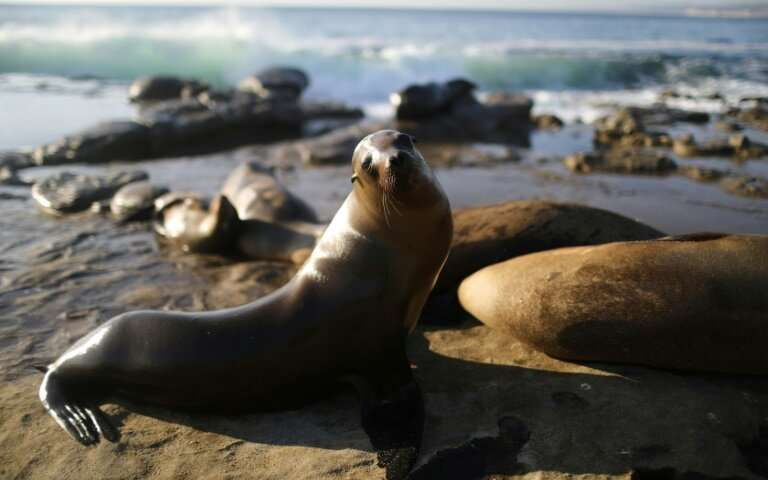

Where To View Wildlife in Washington State
Title description, Dec 2, 2019

Washington is a biodiverse state with nine distinct eco-regions and thousands of wildlife species,
including 20,000 invertebrates, 470 freshwater and marine fishes, 341 birds, 140 mammals, 25
amphibians, and 21 reptiles. Most of the ecosystem types in the American west occur within
Washington, including freshwater, marine, grassland, shrubland, and forest ecosytems. Within this
rich diversity of terrain you can find wolves and whales, bats and birds, grizzlies and gophers,
cougars and caribou and more. The state’s vast and varied terrain provides an abundance of wildlife
viewing opportunities, as well. From Mount Saint Helens to Mount Rainier and from Lime Kiln Point to
Deception Pass, these are the best places to view wildlife near Seattle.
Washington
In November 2015 Washington state voters passed Initiative 1401, a first-of-its-kind ballot measure
in Washington State which prohibited the purchase, sale and distribution of products made from 10
endangered animals. I-1401 was Save Animals Facing Extinction’s first effort to protect wildlife,
and with the support of philanthropist Paul G. Allen and the nation’s leading conservation,
education and zoological organizations as well as grassroots donors from across the country, the
initiative passed with 70 percent support.
I-1401 protects a wide range of imperiled species, including some of the most endangered species on
the planet. Trafficking in the parts of elephants, rhinoceros, tigers, lions, leopards, cheetahs,
marine turtles, pangolins, sharks and rays means criminals caught peddling these items could face a
maximum penalty of five years in prison or a $10,000 fine.
The ban does not apply to bona fide antiques over 100 years old provided the amount of ivory is less
than 15% by volume, educatoin or scientific purposes chartered by a museum or travelling exhibition,
transfers through inheritance, musical instruments with less than 15% of ivory by volume and
wherever otherwise permitted including federal religious and tribal exemptions or permits.